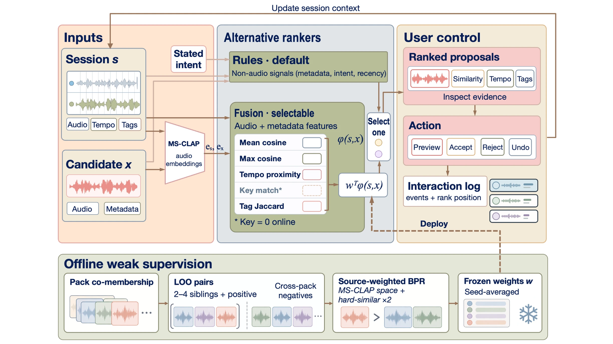

Try a recording you saved months ago in the song you’re working on now.
Browse the read-only demo without signing in. You’ll need an Audiotool account to try suggestions in a session.
Demo video · ISMIR 2026 Late-Breaking Demo
Like a lot of people who make music, I start far more ideas than I finish. A phrase I record doesn’t fit the song I’m writing that week, so it stays on my phone. Pocket Producer is a notebook for those ideas. You record or upload a sketch, add a note if you want, and the app brings it back later, when you have a song open that it might work in.
In the library, the app groups sketches that share a feeling or theme. A lyric and a melody can go together even when their tempos don’t match. When you’re arranging, it ranks your sketches against the song you have open, where timing and harmony matter.
In the library. librosa estimates tempo and key and measures loudness. Gemini suggests a title and tags from your recording and note. Two Google ADK agents use Voyage-3 text embeddings to find related sketches and decide whether a new one belongs in a project. You can edit the title or tags, and those edits can inform later prompts.
In a session. The app reads the tempo, tracks, and up to eight audio samples from your open project. I use three main ways to rank sketches.
Beat Fit shows harmony, rhythm, and the number of shared beats separately. You can listen to the sketch on its own, then decide whether to insert it and hear it against your track. The app records the objects created in one DAW transaction so undo can remove the insertion. I built the web app with Next.js and FastAPI.

The diagram is from my ISMIR demo. In a follow-up test, I asked which features would pick up on a part arriving four beats late.
I scored each original stem and its delayed copy against the same backing. The comparison uses 402 pairs from MUSDB18-HQ where the shift changed harmony inside the analysis window.
| Method | Original scored higher | 95% interval |
|---|---|---|
| Beat-aligned chroma | 74% | 69–78% |
| Chroma averaged over the clip | 45% | 39–49% |
Moving a stem also changes which audio falls inside the window. These scores tell me how the features respond to the edit. Deciding which version sounds better takes listening.
In a second test, onset patterns alone ranked the original first 53.2% of the time among 50 candidates of the same stem type. Adding chroma reached 52.7%, with no clear gain.
A loop can land right on the beat and still crowd the vocal. That’s something I judge by ear. I show the rhythm and harmony measurements separately so there’s something specific to listen for, and I made the insertion reversible so you can try a part before you commit. Next, I’d ask musicians to try their own sketches and tell me why they kept, moved, or removed one.
ISMIR 2026 — Late-Breaking Demo · Abu Dhabi, UAE
The demo paper explains how I trained the fusion ranker and how the choice of examples changed the results.